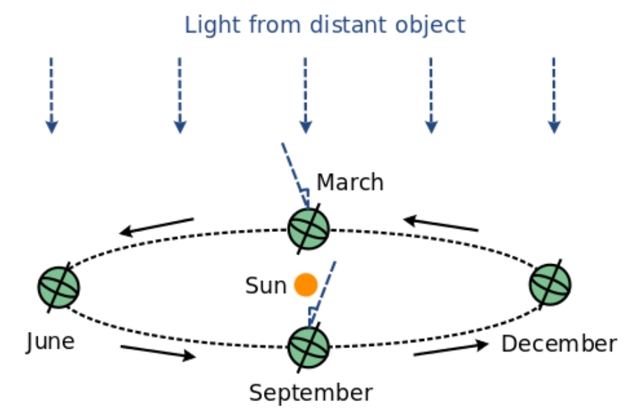

L'aberració anual és causada pel moviment d'un observador a la Terra mentre el planeta orbita al voltant del Sol. A causa de l'excentricitat orbital, la velocitat orbital de la Terra (en el marc de referència del Sol) varia periòdicament durant l'any a mesura que el planeta recorre la seva òrbita el·líptica i, conseqüentment, l'aberració també varia periòdicament, fent que les estrelles semblin moure's en petites el·lipses.
Si aproximem l'òrbita de la Terra com a circular, el desplaçament màxim d'una estrella a causa de l'aberració anual es coneix com a constant d'aberració, convencionalment representada per 𝜅. Es pot calcular utilitzant la relació 𝜅 = 𝜃 - 𝜙 ≈ v/c, substituint la velocitat mitjana de la Terra en el marc de referència del Sol per 𝑣 i la velocitat de la llum 𝑐. El seu valor acceptat és de 20.49552 segons d'arc o 0.000099365 radians (al J2000).
Assumint una òrbita circular, l'aberració anual fa que les estrelles exactament a l'eclíptica (el pla de l'òrbita de la Terra) semblin moure's endavant i enrere al llarg d'una línia recta, variant per 𝜅 a banda i banda de la seva posició en el marc de referència del Sol. Una estrella que es trobi precisament en un dels pols eclíptics (a 90° del pla eclíptic) semblarà moure's en un cercle de radi 𝜅 al voltant de la seva posició real, i les estrelles a latituds eclíptiques intermèdies semblaran moure's al llarg d'una petita el·lipse.
Per il·lustrar-ho, considerem una estrella al pol eclíptic nord vista per un observador en un punt del Cercle Polar Àrtic. Aquest observador veurà l'estrella transitar pel zenit un cop cada dia (en realitat, cada dia sideral). Al moment de l'equinocci de març, l'òrbita de la Terra porta l'observador en direcció sud, i la declinació aparent de l'estrella es desplaça cap al sud per un angle de 𝜅. A l'equinocci de setembre, la posició de l'estrella es desplaça cap al nord per una quantitat igual i oposada. En qualsevol solstici, el desplaçament en declinació és de 0. Per contra, la quantitat de desplaçament en ascensió recta és de 0 en qualsevol equinocci i màxima en qualsevol solstici.
En realitat, l'òrbita de la Terra és lleugerament el·líptica en lloc de circular, i la seva velocitat varia una mica al llarg de la seva òrbita, cosa que significa que la descripció anterior és només aproximada. L'aberració es calcula amb més precisió utilitzant la velocitat instantània de la Terra respecte al centre de massa del Sistema Solar.
Cal tenir en compte que el desplaçament a causa de l'aberració és ortogonal a qualsevol desplaçament a causa de la parallaxi. Si la parallaxi és detectable, el desplaçament màxim cap al sud es produiria al desembre, i el desplaçament màxim cap al nord al juny. Aquest moviment aparentment anòmal va desconcertar molt als astrònoms antics.
L'aberració de la llum (\(\alpha\)) és l'efecte observat quan la posició aparent d'una estrella es desplaça a causa del moviment de la Terra al voltant del Sol.
La fórmula per calcular l'aberració és:
On \( \theta \) es pot calcular com el complement de l'angle entre l'objecte observat i la direcció orbital de la Terra.
Per a una estrella observada directament al cenit (zenital), \( \theta = 0^\circ \) i l'aberració és màxima.
Per a una estrella observada en l'horitzó, \( \theta = 90^\circ \) i l'aberració és mínima.
La informació següent es basa en l'article de James Bradley "A letter from the Reverend Mr. James Bradley Savilian Professor of Astronomy at Oxford, and F. R. S. to Dr. Edmond Halley Astronom. Reg. &c. giving an account of a new discovered motion of the fix'd stars". Bradley va descobrir l'aberració de la llum observant l'estrella γ Draconis.
Utilitzarem l'aberració màxima observada de 20,5 segons d'arc per recalcular la velocitat de la llum:
Convertim l'angle d'aberració a radians:
La velocitat de la Terra en la seva òrbita és aproximadament 30 km/s:
Utilitzem la fórmula per calcular la velocitat de la llum:
Aquest valor és molt proper al valor acceptat actualment per la velocitat de la llum (299.792.458 m/s). La diferència es pot atribuir a la precisió de les mesures de Bradley i les unitats utilitzades en aquell temps.
James Bradley va utilitzar l'aberració de la llum per derivar la velocitat de la llum basant-se en l'angle màxim de desviació observat de les estrelles i la velocitat coneguda de la Terra en la seva òrbita. Aquest descobriment va ser crucial perquè va proporcionar una de les primeres mesures relativament precises de la velocitat de la llum i va contribuir al desenvolupament de l'astronomia i la física.